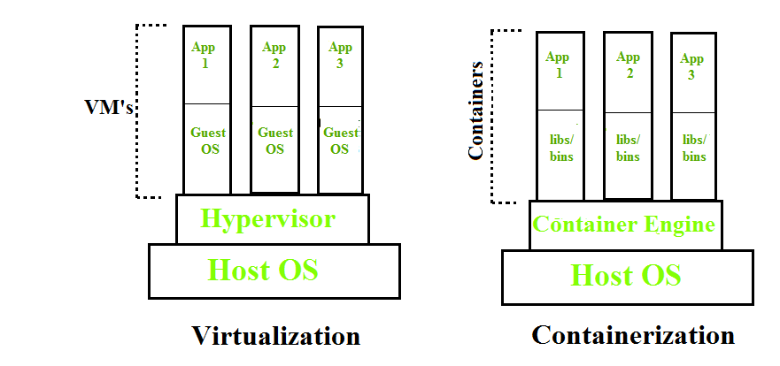

Containerization
Definition
Docker is the containerization platform which is used to package your application and all its dependencies together in the form of containers so to make sure that your application works seamlessly in any environment which can be development or test or production.
Example
Containerization is OS-based virtualization which creates multiple virtual units in the userspace, known as Containers. Containers share the same host kernel but are isolated from each other through private namespaces and resource control mechanisms at the OS level. Container-based Virtualization provides a different level of abstraction in terms of virtualization and isolation when compared with hypervisors. Hypervisors use a lot of hardware which results in overhead in terms of virtualizing hardware and virtual device drivers. A full operating-system (e.g -Linux, Windows) run on top of this virtualized hardware in each virtual machine instance. But in contrast, containers implement isolation of processes at the operating system level, thus avoiding such overhead. These containers run on top of the same shared operating system kernel of the underlying host machine and one or more processes can be run within each container. In containers you don’t have to pre-allocate any RAM, it is allocated dynamically during the creation of containers while in VM’s you need to first pre-allocate the memory and then create the virtual machine. Containerization has better resource utilization compared to VMs and a short boot-up process. It is the next evolution in virtualization. Containers are able to run virtually anywhere, greatly easy development and deployment: on Linux, Windows, and Mac operating systems; on virtual machines or bare metal, on a developer’s machine or in data centers on-premises; and of course, in the public cloud. Containers virtualize CPU, memory, storage, and network resources at the OS-level, providing developers with a sandboxed view of the OS logically isolated from other applications. Docker is the most popular open-source container format available and is supported on Google Cloud Platform and by Google Kubernetes Engine.
Docker Architecture
Docker architecture consists of Docker client, Docker Daemon running on Docker Host, and Docker Hub repository. Docker has client-server architecture in which the client communicates with the Docker Daemon running on the Docker Host using a combination of REST APIs, Socket IO, and TCP. If we have to build the Docker image, then we use the client to execute the build command to Docker Daemon then Docker Daemon builds an image based on given inputs and saves it into the Docker registry. If you don’t want to create an image then just execute the pull command from the client and then Docker Daemon will pull the image from the Docker Hub and finally if we want to run the image then execute the run command from the client which will create the container.

Components of Docker
The main components of Docker include – Docker clients and servers, Docker images,
Dockerfile, Docker Registries, and Docker containers. These components are explained in details in the below
section:
1. Docker Clients and Servers– Docker has a client-server architecture. The Docker Daemon/Server consists of all
containers. The Docker Daemon/Server receives the request from the Docker client through CLI or REST APIs and
thus processes the request accordingly. Docker client and Daemon can be present on the same host or different
host.

2. Docker Images– Docker images are used to build docker containers by using a read-only
template. The foundation of every image is a base image for eg. base images such as – ubuntu14.04 LTS, Fedora
20. Base images can also be created from scratch and then required applications can be added to the base image
by modifying it thus this process of creating a new image is called “committing the change”.
3. Docker File– Dockerfile is a text file that contains a series of instructions on how to build your Docker image.
This image contains all the project code and its dependencies. The same Docker image can be used to spin ‘n’
number of containers each with modification to the underlying image. The final image can be uploaded to Docker
Hub and share among various collaborators for testing and deployment. The set of commands that you need to use
in your Docker File are FROM, CMD, ENTRYPOINT, VOLUME, ENV, and many more.
4. Docker Registries– Docker Registry is a storage component for Docker images. We can store the images in either
public/private repositories so that multiple users can collaborate in building the application. Docker Hub is
Docker’s own cloud repository. Docker Hub is called a public registry where everyone can pull available images
and push their own images without creating an image from scratch.
5. Docker Containers– Docker Containers are runtime instances of Docker images. Containers contain the whole kit
required for an application, so the application can be run in an isolated way. For eg.- Suppose there is an
image of Ubuntu OS with NGINX SERVER when this image is run with docker run command, then a container will be
created and NGINX SERVER will be running on Ubuntu OS.